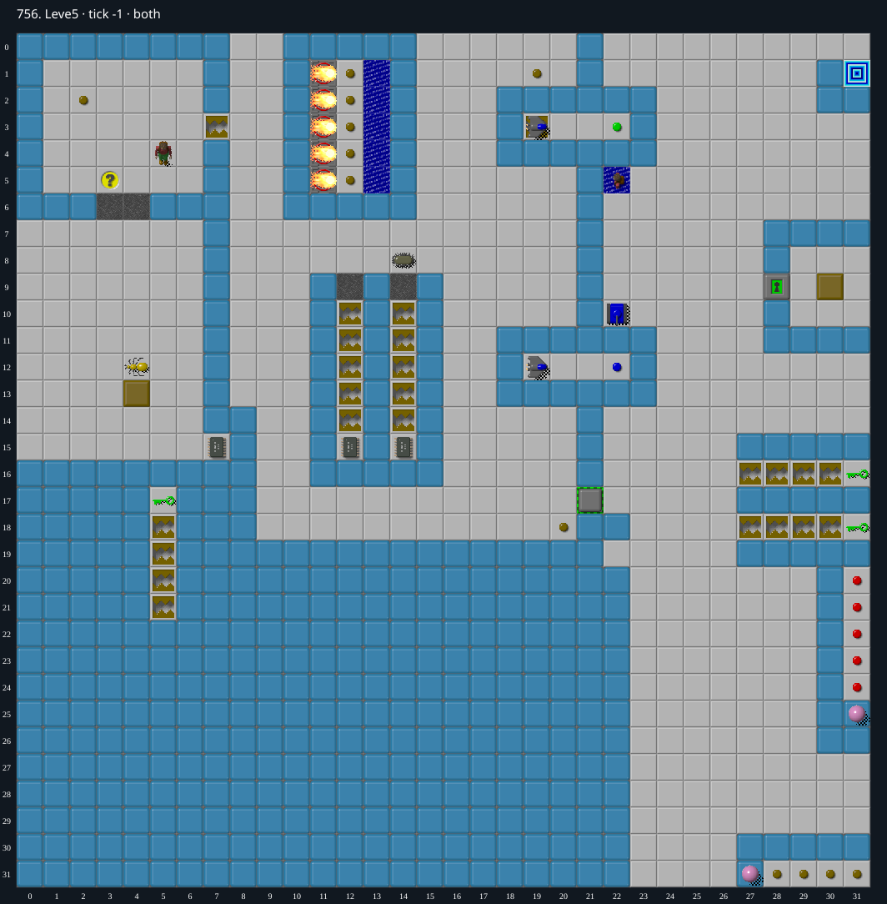

Jacques · Original Tile World MS
756. Leve5
Impossibility argumentA remote glider reverses a tank into a decorative Swimming Chip on tick32, killing the game before the player can intervene or exit.
5 chips required · 337 second time limit
Why completion is impossible
- The south-facing tank is blocked by a real blue wall at (22,11)
- A glider confined to the four-cell horizontal passage (19..22,12) reaches the only blue button at (22,12) on tick 12, reversing the tank
- It advances north along its column and hits the stationary Swimming Chip tile at (22,5) on tick 32
- MS treats collision with this extra Chip image as loss of the whole game
- All eight stepping settings reproduce loss on tick 32
- The real Chip begins at (5,4): even ignoring every wall, reaching the assembly at x=19 or greater takes at least 14 ordinary moves (52 ticks for the fourteenth move), and reaching the only exit requires at least 29 moves
- No forced floors or teleporters exist
- The sole reachable early button is brown at (2,2), connected only to the unrelated trap (7,3); it cannot alter the isolated tank/glider assembly
- The blue-button glider passage is sealed
- The tank column is open to the east, but the only random actor, the blob at (14,8), needs at least eight moves just to reach that column, at eight ticks per blob move; every wall only increases this bound
- Other mobile actors also cannot reach the column or its button before tick 32
- Therefore seed choice cannot prevent the collision.
Inspect both layers
The main map shows the initial runtime state. Switch to the buried layer to inspect hidden terrain and items. Hover coordinates are also available in the downloadable SVG.


Recorded checks and attempts
- native exact-DAT timing probes: Native MS fails on tick32 for all eight stepping settings; precise glider/button/tank positions retained. The timing probes support the independent intervention-distance argument; failed play alone is not treated as impossibility.